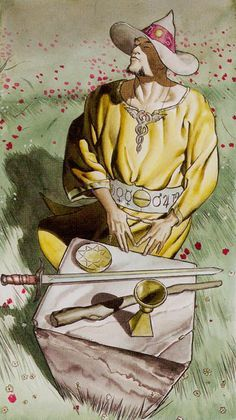
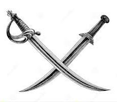
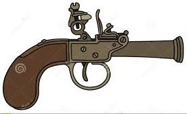

Marque uma caixa de Sorte para alterar uma rolagem para 12 ou evitar todo o dano de um ferimento.
DANO
Quando você chegar em 4 ou mais, marque ‘Instável’.



CRIAÇÃO DO CAÇADOR
Para criar seu caçador Arcano, primeiro escolha e escreva um nome na caixa de texto no início da página. Então siga as instruções para decidir sua
aparência, classificações, magia combativa, movimentos e equipamentos. Finalmente, se apresente e escolha o histórico.
APARÊNCIA, ESCOLHA UMA EM CADA LISTA:
CLASSIFICAÇÕES, ESCOLHA UMA LINHA:
APRESENTAÇÕES
Quando você chegar aqui, espere que todos também cheguem para
que vocês se apresentem juntos. Na sua vez descreva seu caçador e
diga ao grupo o que eles sabem sobre você.
HISTÓRICO
Na sua vez escolha um destes para cada um dos caçadores:
• Ele age como sua consciência quando você sente o poder subir à
cabeça. Pergunte a ele sobre a última vez que isto aconteceu.
• Parentes de sangue, embora vocês não tenham tido contato por
vários anos. Pergunte a ele como vocês se reconectaram.
• Mentor de uma outra vida. Pergunte a ele o que ele te ensinou.
• Quando você o resgatou exibindo sua magia, você o introduziu
ao sobrenatural. Diga a ele que criatura estava atrás dele.
• Uma velha rivalidade que se tornou uma forte amizade. Diga a
ele o que vocês disputavam.
• Você pensou que ele estava morto, e agora ele está de volta. O
que o “matou”?
• Ele é um interesse amoroso que vai e volta. Pergunte a ele o que
mantém vocês separados. Diga a ele o que mantém vocês juntos.
• Um companheiro de luta. Vocês enfrentaram as maiores ameaças
juntos.
SUBINDO DE NÍVEL
Sempre que sua rolagem for 6 ou menos, ou quando um movimento
determinar, marque uma caixa de experiência.
Quando você tiver preenchido todas as cinco caixas de experiência,
você sobe de nível. Apague todas as caixas e escolha
uma melhoria da seguinte lista:
MELHORIAS
Depois de você subir de nível cinco vezes, você já pode ter
melhorias avançadas além destas.
MELHORIAS AVANÇADAS
MAGIA COMBATIVA
Você tem alguns feitiços de ataque que pode usar como armas. Quando você usar estes feitiços para partir pra porrada,
role +Estranheza em vez de +Braveza. Algumas vezes a situação pode fazer você agir sob pressão para que o feitiço seja lançado sem problemas.
Escolha três opções da lista abaixo. Seus feitiços combativos podem combinar qualquer base com qualquer efeito.
Magia combativa (escolha três, tendo pelo menos uma base):
Bases:
Efeitos:
MOVIMENTOS
Você recebe todos os movimentos básicos e quatro movimentos de caçador Arcano.
Você recebe este:
• Consumíveis: Você precisa ter certos suprimentos — pós, óleos, etc. — a mão para lançar seu feitiço. Eles são consumidos quando você lança o feitiço. Se você não os tiver a mão, seu corpo será o substituto: receba [1-dano ignoraarmadura] quando lançar.
• Focos: Você precisa de varinhas, cajados e outros implementos chamativos para focar seus esforços de forma mais poderosa. Se você não tiver o que precisa a mão, sua magia combativa causa −1 de dano.
• Gestos: Você precisa ser capaz de gesticular com suas mãos de forma chamativa para poder usar sua magia combativa. Se você estiver preso de alguma forma você ainda consegue lançar o feitiço, mas as chances de dar errado são maiores; receba −1 constante em sua magia combativa.
• Encantamentos: Você precisa falar em uma linguagem mística para controlar sua magia sem filtrá-la diretamente com sua mente. Se você usar um feitiço de magia combativa, com sucesso ou falha, enquanto não pode ou não quer falar, você deve imediatamente agir sob pressão para evitar embaralhar seus pensamentos — produzindo alucinações,
perda de sentidos e desorientação em geral.
Depois escolhe três destes:
• Fiasco: As preparações e materiais para o feitiço foram arruinados. Você terá que começar do zero com o tempo de preparação dobrado.
• Isso não vai ser bom: O efeito acontece, mas você aciona todos os defeitos listados menos um. Você escolhe qual defeito vai evitar.
EQUIPAMENTOS
Você não precisa de muito — além de qualquer foco ou consumível para dar poder à sua magia. No entanto, ainda é bom ter uma reserva.